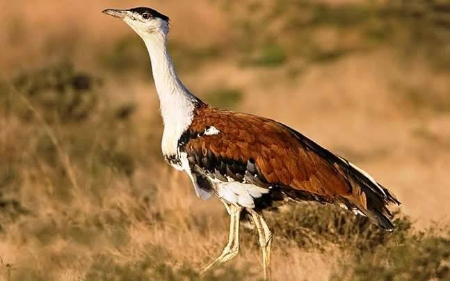

Great Indian Bustard
Birds
The great Indian bustard or Indian bustard is a bustard found on the Indian subcontinent. A large bird with a horizontal body and long bare legs, giving it an ostrich like appearance, this bird is among the heaviest of the flying birds.
Scientific name: Ardeotis nigriceps
Conservation status: Critically Endangered (Population decreasing) Encyclopedia of Life
Class: Aves
Order: Otidiformes
Family: Otididae
Rank: Species
Great Indian bustard, (Ardeotis nigriceps), large bird of the bustard family (Otididae), one of the heaviest flying birds in the world. The great Indian bustard inhabits dry grasslands and scrublands on the Indian subcontinent; its largest populations are found in the Indian state of Rajasthan.
Great Indian bustards are tall birds with long legs and a long neck; the tallest individuals may stand up to 1.2 metres (4 feet) high. The sexes are roughly the same size, with the largest individuals weighing 15 kg (33 pounds).
Males and females are distinguished by the colour of their feathers. Feathers on the top of the head are black in males, who also possess a whitish neck, breast, and underparts, along with brown wings highlighted by black and gray markings.
Males also have a small, narrow band of black feathers across the breast. In contrast, females possess a smaller black crown on the top of the head, and the black breast band is either discontinuous or absent.
Great Indian bustards are omnivores that feed opportunistically (that is, they feed on any palatable food in their immediate surroundings). They prey on various arthropods, worms, small mammals, and small reptiles.
Insects such as locusts, crickets, and beetles make up the bulk of their diet during the summer monsoon, when rainfall peaks in India and the bird’s breeding season largely takes place.
Seeds (including wheat [Triticum vulgare] and peanuts [groundnuts; Arachis hypogaea]), in contrast, make up the largest portions of the diet during the coldest and driest months of the year.
Adult great Indian bustards have few natural enemies, but they display considerable agitation around certain predatory birds, such as eagles and Egyptian vultures (Neophron percnopterus).
The only animals that have been observed to attack them are gray wolves (Canis lupus). On the other hand, chicks may be preyed upon by felines, jackals, and feral dogs.
Eggs are sometimes stolen from nests by foxes, mongooses, monitor lizards, and Egyptian vultures and other birds. The greatest threat to the eggs, however, comes from grazing cows that often trample them.
Biology of Great Indian Bustard
Distribution and habitat
This species was formerly widespread in India and Pakistan. The bustard is critically endangered in Pakistan primarily due to lack of protection and rampant hunting. A few birds were detected in a September 2013 survey of the Cholistan Desert in Pakistan.
In India, the bird was historically found in Punjab, Haryana, Uttar Pradesh, Madhya Pradesh, Chhattisgarh, Odisha, Andhra Pradesh, Rajasthan, Gujarat, Maharashtra, Karnataka and Tamil Nadu.
Today the bustard is restricted to isolated pockets in Andhra Pradesh, Gujarat, Karnataka, Maharashtra, Madhya Pradesh and Rajasthan (shared with Pakistan).
Great Indian bustards make local movements but these are not well understood although it is known that populations disperse after the monsoons.
Males are said to be solitary during the breeding season but form small flocks in winter. Males may however distribute themselves close together and like other bustards they are believed to use a mating system that has been termed as an "exploded or dispersed lek". The male is polygamous.
Behaviour and ecology
The great Indian bustard is omnivorous. Apparently, insects, consisting mainly of Orthoptera, but also beetles,( particularly Mylabris sp.) are preferred in the diet.
Alternatively, they will take grass seeds, berries (largely of the genera Ziziphus and Eruca), rodents and reptiles (in Rajasthan they are known to take Indian spiny-tailed lizards Uromastyx hardwickii). In cultivated areas, they feed on crops such as exposed groundnut, millets and pods of legumes.
They drink water if it is available and will sometimes sit down to drink or suck water followed by raising up their heads at an angle. When threatened, hens are said to carry young chicks under the wing.